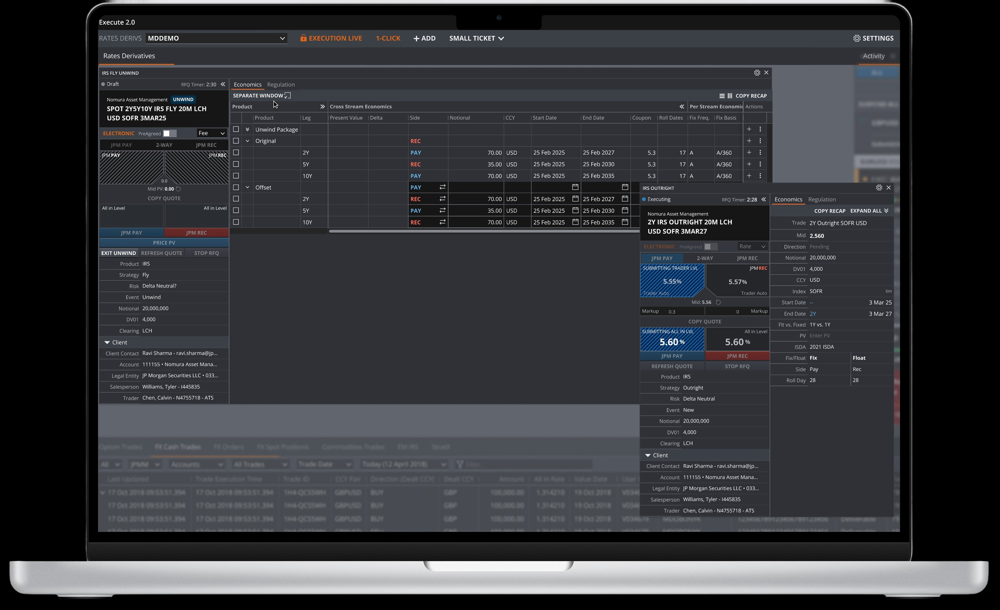

Selected Work
Case Studies
Institutional Trading · JPMorgan
Digitizing Bond Trading
Lead Designer & Researcher
Built the first electronic BWIC trading tool for institutional clients on a single-dealer platform, replacing a manual phone-and-chat process.
Sales Automation · JPMorgan
Automating Rates Derivatives Trading
Lead Designer & Researcher

Replaced a 30-year-old legacy tool and unified three user experiences under one platform for the most complex asset class in fixed income.
Sales CRM · JPMorgan
Reimagining the Sales CRM
Lead Designer
Redesigning the sales homepage from a static data dashboard into a proactive, agentic workspace. Currently in concept phase and being pitched for funding.
About
I'm a product designer with over five years in B2B finance. I work on complex systems where the workflows are dense, the users are experts, and getting the details wrong has real consequences.
I studied Art History at Boston University, partially because I was drawn to research that forces you to sit with complexity until it gives something up. That instinct carried me through a Master's in HCI at Carnegie Mellon, and eventually into institutional finance.
I work end-to-end: from shaping scope and running research to designing and testing with real users. I've shipped zero-to-one products, replaced legacy systems, and worked through the kind of ambiguity that doesn't resolve until you've asked enough of the right questions.
Outside of work: cooking videos, new recipes, yoga with my dog, and wandering New York looking for good art in unexpected places.
Get in Touch